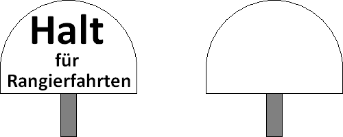

(1) Bedeutung
Über die Tafel hinaus darf nicht rangiert werden.
Signalbuch-Online
Signal Ra 10 - Rangierhalttafel
Informationen und Bedeutung zur Rangierhalttafel im Eisenbahnbetrieb.
(2) Beschreibung
Eine oben halbkreisförmige abgerundete weiße Tafel mit schwarzer Aufschrift "Halt für Rangierfahrten".

Die Tafel kann auch ohne Aufschrift sein.
(3)
Das Signal steht in der Regel links vom Gleis.